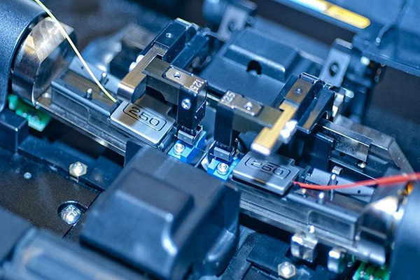
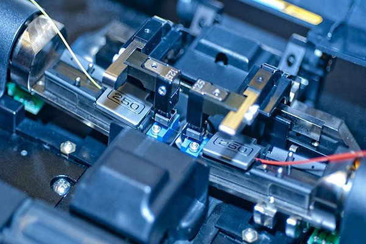

Industrial Exposure
Internship
Optical Fiber Communication
In fiber communication the fusion splice protection sleeve, Strip the fiber. Strip back all fiber coatings down to the 125um bare fiber. Clean the bare fiber with 99% isopropyl alcohol, Cleave the fiber. The fiber needs to be cleaved with a high precision cleaver. Most splicing machines come with a recommended cleaver. Fiber cleaving is a very important step as the quality of the splice will depend on the quality of the cleave, Put the fibers into the fiber holders in the fusion splicer. Press the start button to start the fusion splicing Heat shrink the protection sleeve to protect the splicing joint.
 

Computer Vision using OpenCV and Python
I opted to detect the plastic ball by colour so I need to set the colour range that I can use to classify each coloured ball. I use an array to hold the values of the lower and upper colour threshold. The colour threshold uses the HSV (Hue Saturation Value) colour profile. Before I can use the HSV profile values that define the coloured ball, I must convert the captured image to the HSV colour profile. Here I use the colour range I set for the ball to create a mask. The mask will make it more efficient to find contours around the detected object. The white area is the area of interest that was found within the colour range set above. I can use various image filters to improve the image mask. Now with image mask we can proceed with finding contours. All the white blobs in the mask will have contours applied. If the quality of the mask is noisy, there is going to be a lot of contours – many small contours. To get useful object detection, I need to remove the contours I do not need.

Matlab using Image Processing
Image segmentation can be achieved in different ways those are thresholding, region growing, water sheds and contours. To extract information regarding tumour, at first in the pre-processing level, the extra parts which are outside the skull and don't have any helpful information are removed and then anisotropic diffusion filter is applied to the MRI images to remove noise. By applying the fast bounding box (FBB) algorithm, the tumour area is displayed on the MRI image with a bounding box and. Then Support Vector Machine classifies the boundary and extracts the tumour.

Embedded Systems with Arduino
ESP8266 wifi module enables internet connectivity to embedded applications, It uses TCP/UDP communication protocol to connect with server/client. To communicate with the ESP8266 wifi module, microcontroller needs to use set of AT commands to communicates with ESP8266 wifi module using UART having specified Baud rate. At the client end, we need to check ESP8266 responses on the serial terminal of PC/Laptop. Connect ESP8266 module transmit pin (TX) to the receive pin (RX) of Arduino UNO and to receive pin (RX) of USB to serial converter to PC/Laptop. Open the serial terminal on PC/Laptop to see the ESP8266 responses for the AT command sent from Arduino UNO.

Industrial Visit